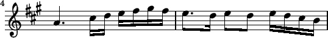

Next:
C
Up:
saxophone
Previous:
Reeds
Contents
Index
Basic Techniqes
Subsections
C
Grade 1
C Major Scale
Grade 2
Daily Exercise No. 1
G
Grade 1
G Major Scale (Accidentals)
G Major Scale (Key Signature)
Grade 2
Temple Hill: A Cork Reel
Molly on the Shore: A Cork Reel
The Ace and Deuce of Pipering
A
Grade 3
Adieu Ye Young Men of Claudy Green
E

Grade 3
Adieu, My Lovely Peggy
2015-11-21